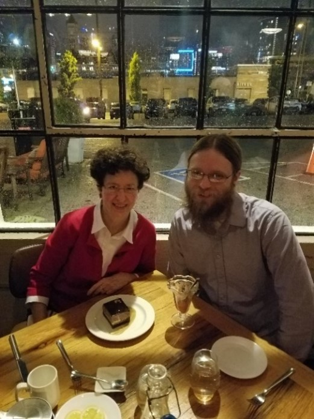
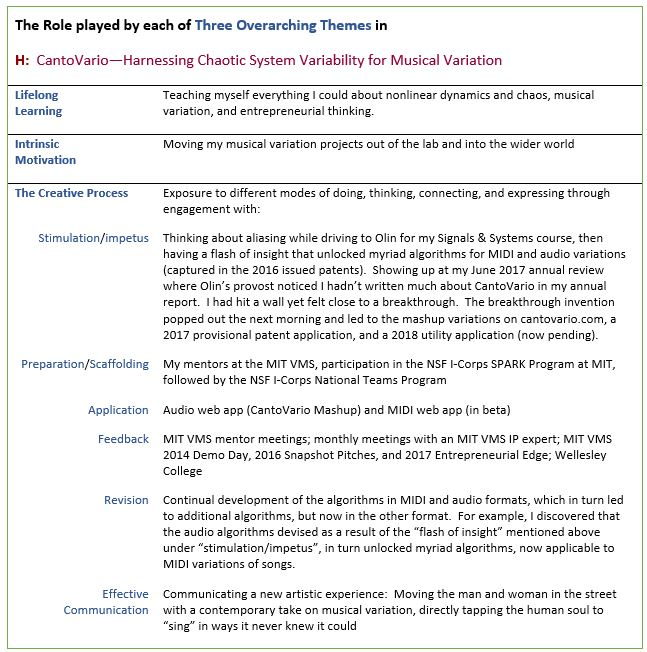

Though my musical variation projects encompassed by “CantoVario” now span music, electrical engineering, and entrepreneurial thinking, they began by linking only two—music and engineering—by providing a means by which music combined with chaos theory produced musical variations. Specifically, I found a way to temper and tame a natural mechanism for variability in chaotic systems by devising a chaotic mapping, resulting in musical variation. This technique became the cornerstone of my doctoral thesis, Musical Variations from a Chaotic Mapping. After earning my doctorate, I expanded my ideas further, figuring out how to generate variations of audio songs, which in turn led to algorithms for making more sophisticated pitch and rhythmic variations of MIDI songs. Because I was now working on a number of musical variation projects, I started referring to them by the umbrella term “CantoVario.” Up to this point, CantoVario existed at the intersection of music and engineering. But funding remained a constant issue. My work didn’t neatly fit grant opportunities which tended to be discipline-specific. In short, I didn’t know where to turn or what to do with CantoVario. A colleague suggested the MIT Venture Mentoring Service (MIT VMS). I applied in Fall 2013 and with that step, I gradually put on the entrepreneurial hat. My musical variation project (CantoVario) now combines music, engineering, and entrepreneurial thinking (i.e., articulating a vision and bringing it to fruition, as has been done for centuries by creative artists).
My musical variation research (CantoVario) is significant because it allows musicians and non-musicians alike to create variations of their songs, whether in MIDI (musical instrument digital interface) format or in audio formats such as mp3 and wav. The CantoVario project—underpinned by a number of algorithms based on my patents (granted and pending)—has been recognized by experts at the National Science Foundation (NSF) and MIT, thus demonstrating external impact. CantoVario has also been recognized in the “Ideas” section of the Boston Sunday Globe and in a chapter of a Harvard University Press book.
The MIT VMS subsequently invited CantoVario to participate in its Snapshot Pitches 2016, Entrepreneurial Edge Showcase 2017, and the MIT Innovation Corps (2018), a program sponsored by the National Science Foundation (NSF). In March 2019, CantoVario was selected for the National Innovation Corps (I-Corps) sponsored by NSF and awarded a 50K grant for customer discovery.
The MIT Venture Mentoring Service (VMS) selected CantoVario as one of the presenters for its 2014 Demo Day. Seventy startups applied and 20 were selected, including CantoVario. A video of CantoVario’s Demo Day five-minute presentation, given April 30, 2014, can be found to the right/below.
Figure 14: Poster for the 2014 MIT VMS Demo Day
As part of the NSF National Innovation Corps, the CantoVario team participated with 20 other nationally-selected teams in an intensive 7-week program. The I-Corps program embraces the Steve Blank approach to entrepreneurship: “getting out of the building” to interview potential users about their “jobs to be done”, e.g., what goes well in these “jobs to be done” and what doesn’t go so well. Our team included an Olin alum as software developer (Jacob Kingery ’16) and an industry mentor (Howard Lieberman, formerly with Bose Corporation and Apple Computer).
As the entrepreneurial lead for the CantoVario team, I completed 170 face-to-face interviews in 6½ weeks, May 6 – June 13, 2019. These interviews yielded context as well as gain/pain points, focusing mainly on musician-producers: amateur, student, and professional. Here, the term musician-producer is defined as a musician who creates music as her/his/their ‘job to be done.' Yet many of those interviewed wear myriad musical hats: instrumentalist, singer, songwriter, recording engineer, mixer, etc., as discovered through interviews in Nashville, Miami, and the greater Boston area.
The CantoVario project has developed students’ programming and presentation skills: Students (and Olin alumni) assisted me in preparing and demonstrating CantoVario at the 2014 MIT Venture Mentoring Service (VMS) Demo Day, the 2016 MIT VMS Snapshot Pitches, the 2017 Entrepreneurial Edge Showcase, the 2018 keynote address for the Academy of Applied Science Young Inventors Program, and the 2019 NSF National I-Corps Teams presentations. For the latter, each team had to prepare weekly webinar presentations on what was learned. For our final deliverables, I-Corps required a 2-minute video summarizing our “Lessons Learned”, i.e., what our interviewees taught us, as well as a ten-minute presentation in Nashville.
Read the full NSF I-Corps Backstory.
Jacob Kingery ’16 and Diana Dabby having dessert at Adele’s after giving our final NSF I-Corps National Teams presentation on June 21, 2019 in Nashville.
The CantoVario web app contains 160 mashups generated by my latest algorithms, as disclosed in “Method and Apparatus for Computer-Aided Mash-up Variations of Music and other Sequences, Including Mash-up Variation by Chaotic Mapping”, (Utility patent awarded 2020). A video on the web app landing page gives an overview of the project which encompasses both MIDI and audio applications.
As a potentially disruptive audio and MIDI technology, CantoVario can alter how people interact with music on and offline. It takes “personalized music” beyond playlists and song recommendations, allowing music lovers to directly participate in the creative process. For musicians, it enables new avenues for developing and presenting original music to listeners for a more interactive user experience.
Currently, CantoVario encompasses three related projects, as described in this document, that unite chaos science with musical variation. The first addresses a music maker’s worst pain point, while projects 2 and 3 expand the technology to wider audiences through a novel music/STEM exhibit prototype for a science museum and a new listening experience for concert-goers (the “variation concert”).
All three projects rely on CantoVario’s core technology that employs a dissipative chaotic system, e.g., the Lorenz equations, to generate musical variations. Most engineers seek ways to eliminate chaos, but I thought it could be used. In its ‘chaotic regime’, the Lorenz system possesses a natural mechanism for variability due to the sensitivity of its solutions to initial conditions. I found a way to exploit that built-in variability to produce variations of a context-dependent sequence of symbols, where the variant output can be close to the original work, mutate beyond recognition, or achieve degrees of variability in between.
In sum, as the PI for CantoVario’s NSF grants, I did not apply science to art, nor art to science. Rather, I took a fundamental concept in chaos science (sensitive dependence on initial conditions) and a fundamental concept in music (variation), then created something original and nonrepresentational, as first evidenced by my MIT doctoral thesis and then expanded in a series of issued patents. This process was remarked upon in an article written by Science Reporter Carolyn Y. Johnson for the Ideas Section of the Boston Sunday Globe in 2013:
The idea that science and art have something important to teach one another has been trotted out so often that it has become a truism, yet it often falls short of the truth. More often, one field seems to borrow the jargon or aesthetics of the other without bringing over the substance. Dabby, however, wanted to bring science to bear on music directly—and eventually she found a way to do just that, by using math to generate new musical ideas.
In fact, though, Dabby’s project touches on a much larger theme: Variation is at the heart of all kinds of creation, and she has invented a new way of generating it. Dabby sees herself following in a musical tradition that stretches from Bach to John Cage. But variation is far more pervasive than that, showing up in all kinds of art and in each of us—down to the slight tweaks in our DNA that make us all recognizably different, though identifiably human.
As demonstrated by the above discussion, CantoVario unites goals of External Impact, Developing Students, and Building & Sustaining the College (Map 1).
In awarding the National Teams I-Corps grant and Partnerships for Innovation--Technology Transfer grant to the PI (Diana Dabby) and her institution (Olin College of Engineering), NSF gave Olin College its first awards from the Technology, Innovation, and Partnerships (TIP) Directorate.
CantoVario's development over the years embraces engineering, music, and entrepreneurial thinking, depicted in Map 2. The thematic table below succinctly captures the role played by each of my three overarching themes for this project, thus expanding upon Map 3.The table below captures the role played by each of my three overarching themes in creating CantoVario.
